Demo
let us demonstrate an use case
let us say we want to convert an infix expression to prefix expression
This is our lex file lex.l
This is our yacc file parser.y
This is our function to convert an infix expression to prefix expression infixtoprefix
This is our input file input.txt
Input : abc+(bcd-efg)*hij
Expected Output : + abc * - bcd efg hij
We know that we have to construct a infix expression tree by parsing the input string, and then we can do a preorder traversal on that tree to get the prefix. Here, let us see how we can use GDB to verify whether our expression tree / syntax tree is constructed properly.
We know that by manual drawing, the expexted expression tree structure is as follows:-
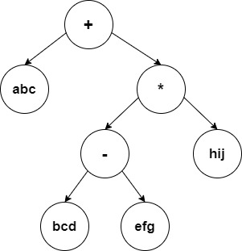
Now let us start our gnu debugger
First we genreate our lexical anaylser from our rules in our lex file lex.l
This genererates our lex.yy.c, the lexical analyser file.
Then we generate our parser from our grammar in our yacc file parser.y
This genererates our y.tab.c, the parser file.
To run the program using gdb, we need to compile the lexical analyser and the parser using the -g flag of gcc, so that we can see the functions and variables names during the execution of the program in the gdb environment. The -g flag preserves the symbol table information generated during compilation of the source program in the target file enabling the debugger to display variable/function names associated with addresses in the program during debugging.
$ gcc -g lex.yy.c y.tab.c
Now, an executable file a.out would be generated.
Now we can execute the a.out file with passing our input file input.txt to it.
In GDB, we use --args flag, if we have to pass any parameters.
$ gdb --args a.out input.txt
Now our GDB is up.
layout next - Opens a Graphical user interface, where you can view the part of the code currently executing along with the code line numbers
break - You can pass a function name or line number as an argument to this command. It will set a break point corresponding to that line number or function. So that when we run the gdb, it halts at the break point, and then we can move incrementally (step by step) exploring the variables and the execution flow.
Here we can use the break command to halt at the start of the execution of the infixtoprefix function infixtoprefix, to examine the working of the function in detail.
(gdb) break infixtoprefix
run - It runs the program until it encounters one of the break points.
Now, we would have stopped at the start of the execution of the function infixtoprefix infixtoprefix
next or n - To move to the next line in the local scope, it is basically a step over function, i.e it do not enter any function code.
Now, let us print the symbol stored at the root of the tree, and also view a snapshot of the gdb GUI, after executing the above instructions.
print - you can use this to print the value of the variables at that point.
In the above image we can see that the command layout next gave us the graphical user interface which allows us to see the code segment currently executing while debugging.
The break statement helped us to reach the interested target function, so that from there we can proceed step by step exploring the contents.
Now let us verify whether we have constructed our expression tree correctly
(gdb) print root
$1 = (struct tnode*) 0x5555555638f0
(gdb) print root->symbol
$2 = 0x55555555afe6 "+"
(gdb) continue
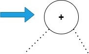
root is the pointer to the nodes in the tree, initially root would be pointing at the root of the syntax tree.
When we print out the content in the node, pointed by root, using GDB, we get the output as "+" as expected.
The right side of the image is just to show where the pointer root is pointing at currently in the syntax tree, and we are constructing that tree only from the information that we are gettig through print statements in our gdb.
As the root node is perfect, we are safe to proceed in checking the values of the remaining nodes.
continue - To run until you encounter next breakpoint
Since the infixtoprefix function is a pre-order traversal of the tree, the function would be recursively called again with the left child of the root node.
Since, we have executed the "continue" statement, the gdb will be executing the code, and halt again only when it reaches the start of the function again, this time due to the recursive call with the left child of root node. This is because we have set a break point at the start of the infixtoprefix function.
(gdb) next
(gdb) print root
$1 = (struct tnode*) 0x555555563710
(gdb) print root->symbol
$2 = 0x55555555636f0 "abc"
(gdb) continue
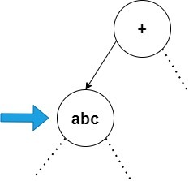
"next" command is used to enter inside the function
Now, same as before we print out the content of the current node, and then we execute the "continue" statement to reach the next node.
Here we found "abc" to the left of "+" node as expected
Moving on to the left node of the current node
(gdb) next
(gdb) print root
$1 = (struct tnode*) 0x0
(gdb) continue
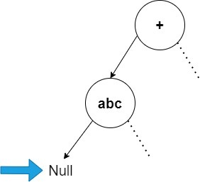
We habe reached Null node represented by 0x0 in hexadecimal
Now we move to the right node, following the pre-order
(gdb) next
(gdb) print root
$1 = (struct tnode*) 0x0
(gdb) continue
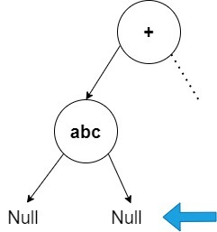
This helps us to infer that "abc" node is a leaf node
Continuing the preorder traversal
(gdb) next
(gdb) print root
$1 = (struct tnode*) 0x555555563711
(gdb) print root->symbol
$2 = 0x55555555636f0 "*"
(gdb) continue
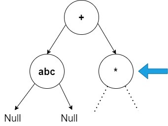
As expected we found "*" to the right of "+" node
(gdb) next
(gdb) print root
$1 = (struct tnode*) 0x555555563720
(gdb) print root->symbol
$2 = 0x55555555636f1 "-"
(gdb) continue
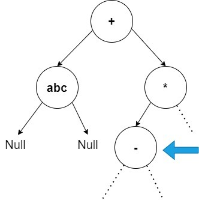
As expected we found "-" to the left of "+" node
Continuing the same steps, we will find node "bcd" to the left of "-" node, and as expected it turns out to be a leaf node
When we move right from the current node "-"
(gdb) next
(gdb) print root
$1 = (struct tnode*) 0x55555556371b
(gdb) print root->symbol
$2 = 0x55555555636f6 "efg"
(gdb) continue
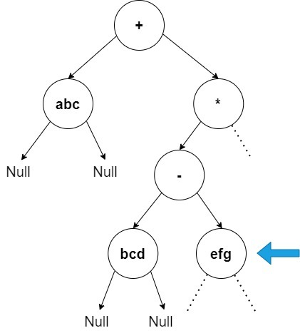
As expected we found "efg" to the right of "-" node
Further continuing the debugging, we will discover node "efg" to be a leaf node
Now, when we move right from node "*"
(gdb) next
(gdb) print root
$1 = (struct tnode*) 0x5555555637c0
(gdb) print root->symbol
$2 = 0x55555555636c2 "hij"
(gdb) continue
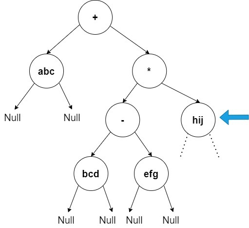
As expected we found "hij" to the right of "*" node
Further continuing the debugging, we will find Null node to the left of "hij" node
Now, when we move right from node "hij"
(gdb) next
(gdb) print root
$1 = (struct tnode*) 0x0
(gdb) continue
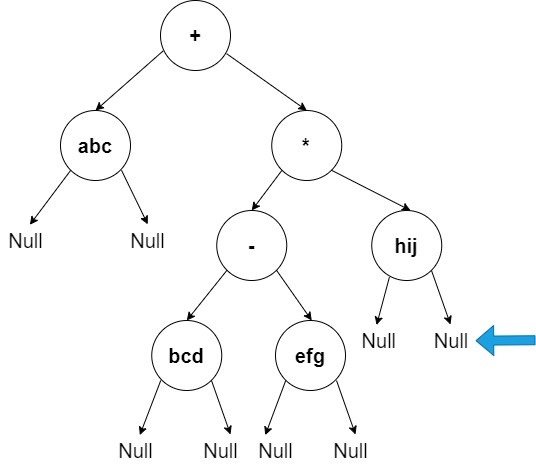
Now the program exits, as we have traversed every node of the expression tree via GDB, and verified the contents of all the nodes, and the expression tree is just as expected.
An alternate way is to set a watchpoint
watch - You can use a watchpoint to stop execution whenever the value of an expression changes, without having to predict a particular place where this may happen.
GDB will monitor the value of the root pointer, and whenever the value of the variable "root" changes (when root points to a different node), gdb halts the execution, and prints the old value and the new value of the "root" variable.
Infinte Loop
One of the important use cases of GDB start when we encounter a segmentation fault or infinte loop, and trust me, we encounter such errors more often than we thin in the upcoming stages, as the syntax tree becomes more and more complex, during those times, GDB debugging of the syntax tree to verify the contents and to find out went wrong is very helpful and saves a lot of time.
In this example, we can see an infinite loop, for the problem infix to prefix problem. let us see how we can use GDB to find the error in the construction of the express tree / syntax tree.
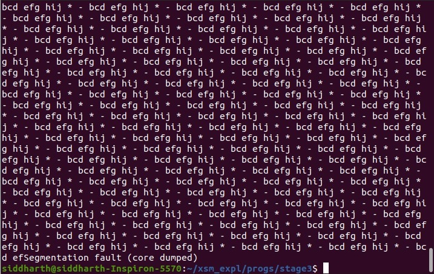
let us print the contents of the tree
(gdb) print root->right->symbol
$3 = 0x55555555637f7 "*"
(gdb) print root->right->left->symbol
$4 = 0x55555555631f1 "-"
(gdb) print root->right->left->left->symbol
$5 = 0x55555555635f2 "bcd"
(gdb) print root->right->left->right->symbol
$6 = 0x55555555631f9 "efg"
(gdb) print root->right->right->symbol
$7 = 0x55555555636f0 "hij"
(gdb) print root->right->right->left
$8 = (struct tnode*) 0x0
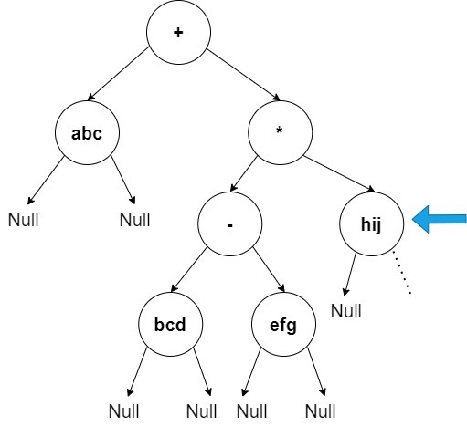
Everything seems fine so far, let us now verify the contents to the right of node "hij".
(gdb) print root->right->right->right
$1 = (struct tnode*) 0x5555555637f0
(gdb) print root->right->symbol
$2 = 0x55555555637f7 "*"
Now, we are not sure whether this node "*" is a new node to the right of node "hij" OR it is the same node which is a right of node "+", and node "hij" is making a cyclic loop with this node.
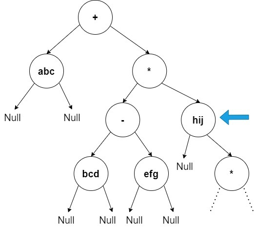
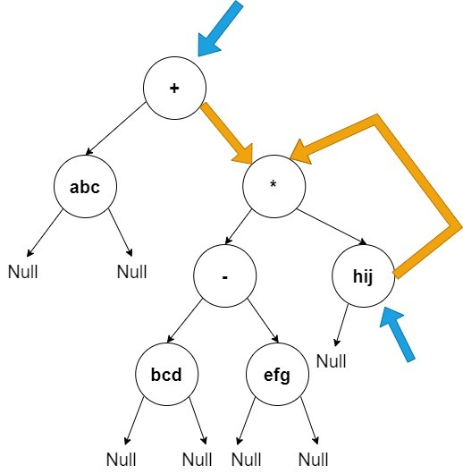
Next, we check whether they are different nodes as shown in the image in the left or it is the same node as in the image shown in the right.
(gdb) print root->right == root->right->right->right
$11 = 1
Now, we do find that both the node "*" is actually the same node, and this cyclic loop was actually the cause of our infinite loop. These checkings could be done in minutes to find the source of the error and thus saving a lot of time for you.
Now, we will remove the loop, and check whether our program runs smoothly now.
(gdb) set root->right->right->right = 0x0
(gdb) clear infixtoprefix
(gdb) continue
Deleted breakpoint 1 continuing.
Inferior 1 (process 10496) exited normally]
Now, we have removed the cyclic loop, and set the right child of node "hij" as NULL, as it was supposed to be. Then when we resume our program, we can see that "(process 10496) exited normally", which confirms the fact that our program does not have an additional errors, and the only error was the cyclic loop, and we need to remove it.
set var - This command is used to modify the current value of a varible, and to see it's effect. An example would be "set var my_sum_var=100"
In the above image, we can see that, we have used the "set" command to change the value of the pointer root->right->right->right to NULL, this actually helped us to check whether this modification helps in solving our infinite loop problem, which it does in this case.
GDB, thus, helps us to save a lot of time in debugging.